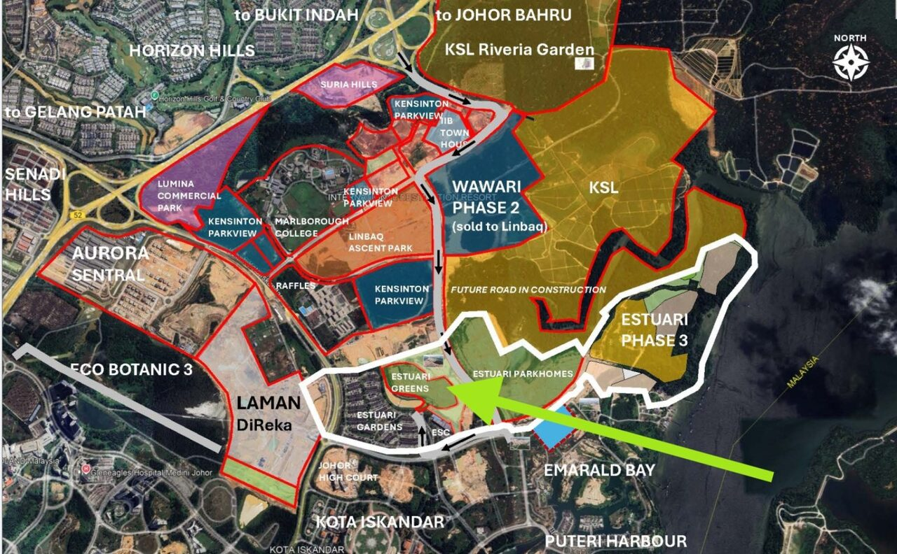
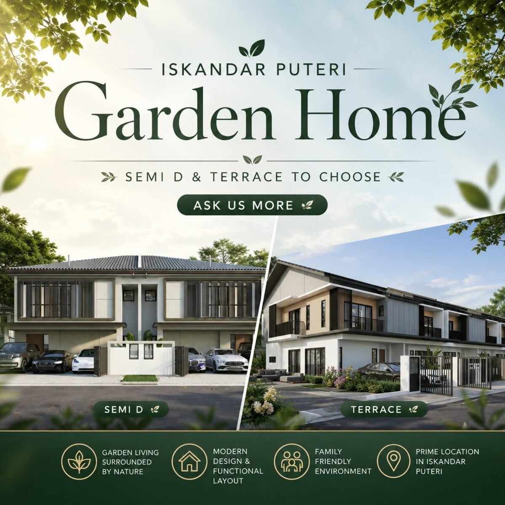
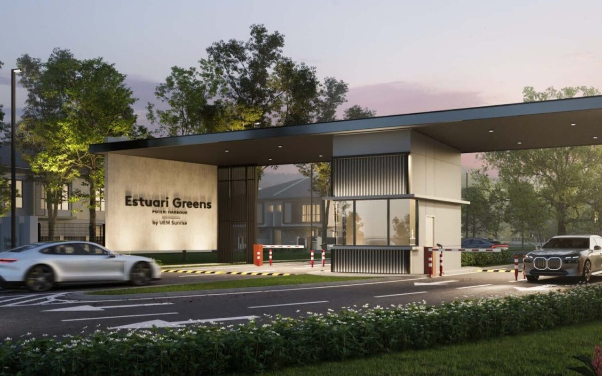
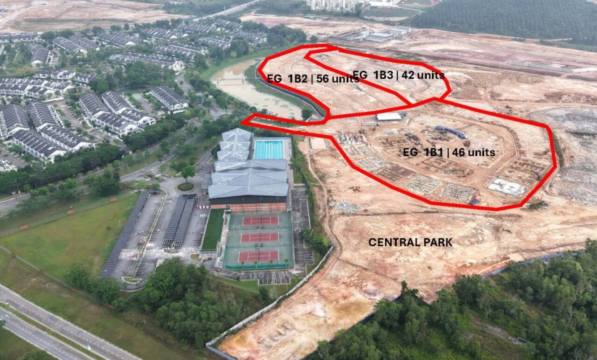

Estuari is a new landed residential area in Puteri Harbour, Iskandar Puteri. Its main appeal is easy to understand: buyers can get a larger home, lower density and a more reasonable entry price than in several nearby mature townships.
But there is a trade-off. Estuari is still developing. It is farther from central Johor Bahru, and buyers may need to wait several years before the wider area feels fully mature.
In this guide, I will explain the full Estuari township, including Estuari Gardens, Estuari Greens and Parkhomes @ Estuari. I will also share who I think should consider it and who may be better buying elsewhere.
Estuari Pros and Cons at a Glance
Estuari is suitable for buyers who want a larger landed home at a more reasonable price. The trade-off is that the area is still new and may need around five to six years to feel more complete.
| Pros | Points to Consider |
|---|---|
| ✓ Terrace options around RM1 million | ! Farther from central Johor Bahru |
| ✓ Semi-D options below RM2 million | ! The area is still developing |
| ✓ Large land and built-up areas | ! Fewer nearby shops for now |
| ✓ Low-density planning | ! May need 5-6 years to feel mature |
| ✓ Developed by UEM Sunrise | ! Ongoing construction in the wider area |
| ✓ Sunway City is within driving distance | ! A car is important for daily life |
Where Is Estuari Township?
Estuari is in the Puteri Harbour side of Iskandar Puteri. It is near Kota Iskandar and sits within a wider growth corridor that includes international schools, new residential areas and future road connections.
Nearby places include Marlborough College Malaysia, Raffles American School, Puteri Harbour, Kota Iskandar and the wider Sunway City Iskandar Puteri area. The site is accessed through Nakhoda Boulevard.

This is not a central Johor Bahru location. If you work in JB city centre every day, you should test the journey during your normal travel hours before making a decision.
On the other hand, the location can make more sense if your daily life is mainly around Iskandar Puteri, Puteri Harbour, Medini, EduCity or the Second Link corridor.
Understanding the Estuari Masterplan
Many buyers hear the name “Estuari” but are not sure whether it means one project or the whole area. It is better to understand it as a master-planned landed community with different phases and housing products.
Estuari Gardens
Estuari Gardens is the earlier completed part of the township. It gives buyers a useful view of the existing residential character and shows that Estuari is not starting from zero.

Estuari Greens
Estuari Greens is aimed at buyers who want a larger semi-detached home. The standard lot size discussed in the current launch is about 40' x 80', with built-up areas from around 3,065 to 3,149 sq ft. The homes have 4+1 bedrooms and 5 bathrooms.

Parkhomes @ Estuari
Parkhomes @ Estuari provides a lower entry point into the township. The current double-storey terrace homes have 22' x 75' lots, built-up areas of about 2,369 to 2,439 sq ft, and 4 bedrooms with 4 bathrooms.
Why the Price Stands Out
For me, price is one of Estuari's strongest points. This does not mean it is simply a “cheap project”. The better question is: how much land and built-up space are you getting for your budget?
At the time of writing, selected Parkhomes units are positioned around the RM1 million level. Selected Estuari Greens semi-detached homes start below RM2 million, although other units move above that level.
Prices and packages can change. Buyers should always check the latest unit list before comparing.
The comparison becomes interesting because semi-detached homes in more mature nearby communities such as Horizon Hills and Sunway City Iskandar Puteri often move above RM2 million. Estuari gives buyers another way to get a large semi-detached home without immediately crossing that level.
For terrace buyers, Parkhomes may also offer more space than many standard new terrace projects around Johor Bahru. A built-up area above 2,300 sq ft is useful for families who need four proper bedrooms and do not want the house to feel tight.
Large Homes and Low-Density Living
The main selling point is not only the house facade. It is the combination of land size, built-up space and low-density planning.
The project briefing lists an overall density of about 6.4 units per acre for Estuari Greens and 8 units per acre for Estuari Parkhomes. Both are planned with freehold individual titles.
This can suit families who want more bedrooms, a proper living area and enough space for children or parents. It may also appeal to buyers upgrading from a condominium or a smaller terrace home.

UEM Sunrise as the Developer
Another reason buyers look at Estuari is the developer. UEM Sunrise is closely linked to the development of Nusajaya, now known as Iskandar Puteri, and has a long history in this part of Johor.
A known developer does not remove all risk. Buyers should still check the exact phase, delivery date, specifications and sale documents. However, the developer's master-planning role is important because Estuari is a long-term township story, not only one row of houses.
Green Space and Estuari Sports Centre
The wider plan includes Central Park and the existing Estuari Sports Centre. The sports centre has facilities such as a swimming pool, tennis courts, badminton, squash, a gymnasium, sauna and multi-purpose rooms.
This is helpful for buyers who want an active family lifestyle. Still, I would not choose a house only because a sports centre is nearby. Ask how often your family will use it and confirm the access arrangement and charges.
What If Daily Amenities Are Not Ready Yet?
This is one of the main questions for a new township. Estuari does not yet have the same mature commercial choices as areas such as Bukit Indah, Eco Botanic or Horizon Hills.
The practical advantage is that Sunway City Iskandar Puteri is not too far away. If the shops and services around Estuari do not yet meet your needs, Sunway Big Box and the wider Sunway area provide more choices for shopping, food and family activities.
This does not mean Estuari and Sunway are the same location. Buyers still need to drive. But nearby Sunway helps reduce one weakness of buying into a newer area.
The Main Weakness: Distance from JB City Centre
I would be careful about recommending Estuari to someone who travels to central Johor Bahru every day. The home may offer good value, but a longer daily journey can slowly reduce your quality of life.
Before buying, think about your real weekly routine:
- Where do you work?
- Where do your children study?
- How often do you need to enter JB city centre?
- Do you mainly use the Second Link or the Causeway?
A cheaper and larger house is not automatically better if the location makes every day difficult.
The Second Trade-Off: Waiting for the Area to Mature
Estuari is still new. Construction, roads, landscaping and surrounding developments will take time. Buyers should not expect the feeling of a fully mature township from the first day.
In my view, the wider area may need around five to six years before it feels more complete. This is my market observation, not a promised construction or completion timeline from the developer.
This difference is important. The individual house may be completed earlier, while the wider township and surrounding commercial activity take longer to mature.
Who Should Consider Estuari?
Estuari may be worth considering if you:
- want a large landed home without stretching far beyond RM1 million for a terrace or RM2 million for a semi-detached home;
- prefer a lower-density environment;
- need more space for children, parents or working from home;
- mainly live around Iskandar Puteri, Puteri Harbour, Medini or the Second Link corridor;
- are willing to wait for the area to grow.
Who May Be Better Buying Elsewhere?
Estuari may not be the best match if you:
- need to commute to central JB every day;
- want shops, restaurants and services within walking distance immediately;
- do not want to live near ongoing construction;
- prefer an established neighbourhood with an active resale market;
- are buying only because the price looks cheaper.
My Final View
I see Estuari as a value-for-space choice in Iskandar Puteri. Buyers are getting a recognised developer, larger homes and a low-density plan at an entry price that remains below many nearby mature semi-detached and landed options.
The value is real only if the location fits your life. You must also be comfortable waiting for the wider area to mature.
If your priority is a big home, family space and long-term living around Iskandar Puteri, Estuari deserves a place on your shortlist. If you need mature convenience or frequent access to JB city centre, compare it carefully with Horizon Hills, Eco Botanic and East Ledang before deciding.
Frequently Asked Questions
Where is Estuari Township?
Estuari is in Puteri Harbour, Iskandar Puteri, Johor. It is near Kota Iskandar, international schools and the wider Sunway City Iskandar Puteri area.
Who is the developer?
Estuari is developed by UEM Sunrise, the master developer behind major parts of Iskandar Puteri.
What homes are available?
The wider township includes completed Estuari Gardens, larger semi-detached homes at Estuari Greens, and double-storey terrace homes at Parkhomes @ Estuari.
Is Estuari a good buy?
It may be a good choice for buyers who want more space at a reasonable entry price and who are willing to wait for the area to mature. It is less suitable for buyers who need central JB access or mature shops immediately.
Are the prices fixed?
No. Prices, available units, rebates and packages can change. Always check the latest official unit list and the full cost before making a booking.